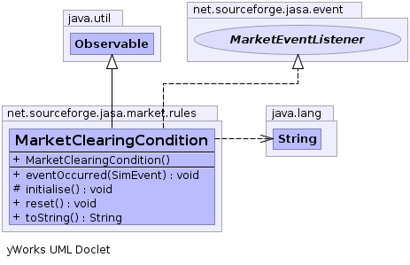

net.sourceforge.jasa.market.rules
Class MarketClearingCondition
java.lang.Object
 java.util.Observable
net.sourceforge.jasa.market.rules.MarketClearingCondition
java.util.Observable
net.sourceforge.jasa.market.rules.MarketClearingCondition
- All Implemented Interfaces:
- net.sourceforge.jabm.event.EventListener, MarketEventListener
- Direct Known Subclasses:
- RoundClearingCondition
public class MarketClearingCondition
- extends java.util.Observable
- implements MarketEventListener
The interface for expressing the condition of clearing the current market.
Whenever, it's time to do so, notifyObservers() is called.
-
-

| Methods inherited from class java.util.Observable |
addObserver, clearChanged, countObservers, deleteObserver, deleteObservers, hasChanged, notifyObservers, notifyObservers, setChanged |
| Methods inherited from class java.lang.Object |
clone, equals, finalize, getClass, hashCode, notify, notifyAll, wait, wait, wait |
MarketClearingCondition
public MarketClearingCondition()
initialise
protected void initialise()
reset
public void reset()
eventOccurred
public void eventOccurred(net.sourceforge.jabm.event.SimEvent event)
- by default, no clearing
- Specified by:
eventOccurred in interface net.sourceforge.jabm.event.EventListener
toString
public java.lang.String toString()
- Overrides:
toString in class java.lang.Object